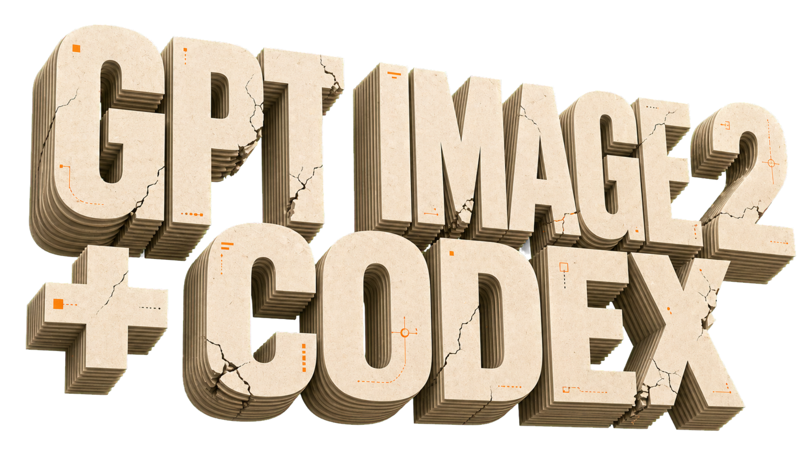
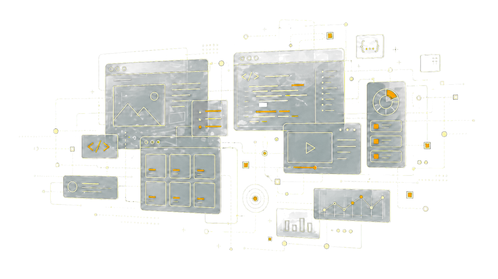
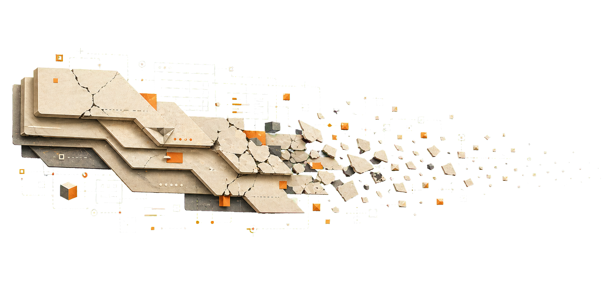
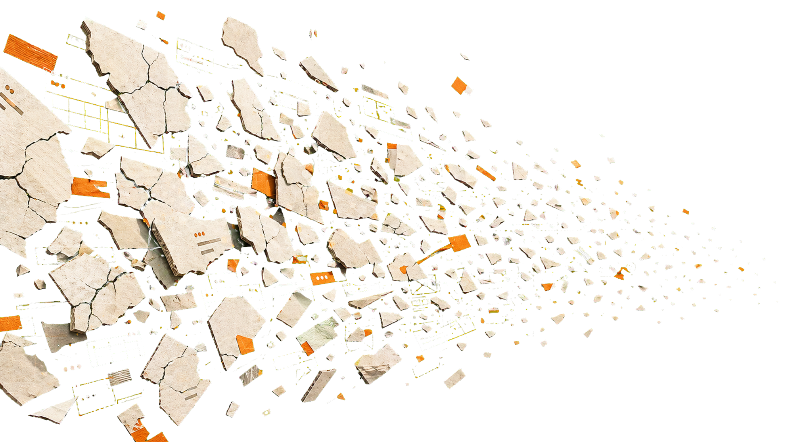

AI GAME PIPELINE
GPT Image 2 + Codex
把视觉资产工坊和编码 agent 连成一条生产线，从概念图推进到浏览器里可玩的网页游戏。

WORKFLOW
流程不是魔法，是四个可控工位
每一站都有输入、产物和验收标准，AI 负责提速，人负责定方向。



玩家目标、核心循环、胜负条件、平台约束。
用 GPT Image 2 形成角色、场景、UI 和状态变体。
生成项目骨架，实现规则，接入素材，运行调试。
检查交互、移动端、性能、截图和源码包。
ROLE SPLIT
GPT Image 2 负责视觉可能性，Codex 负责工程闭环
把风格变成资产
- 角色、场景、道具、UI 风格探索
- 透明背景素材和状态变体
- 快速统一画风、光源、色板和氛围
把资产变成玩法
- 搭建 HTML/CSS/JS 或框架项目
- 实现规则、碰撞、状态机、音效触发
- 运行测试、修 bug、优化移动端
ASSET BOARD
视觉资产先做成一张资产板，再进入代码仓库
让每个素材都能被命名、裁切、复用和替换，Codex 才能稳定接入。
CODEX LOOP
Codex 的价值在于边写边跑，而不是只吐代码
读取需求
生成骨架
接入资产
实现玩法
运行检查
反馈迭代
const game = createGame({
assets: manifest,
loop: "jump-dodge-score",
target: ["desktop", "mobile"]
});
await codex.run("npm test");
await codex.inspect("http://localhost:3000");ARCHITECTURE
一个轻量网页版游戏可以拆成五层
键盘、触摸、手柄、暂停。
分数、生命、关卡、计时器。
移动、碰撞、生成、胜负判断。
Canvas、DOM、Pixi 或 Phaser。
精灵图、背景、UI、反馈音。
QUALITY GATES
交付前至少过三道质量门
玩法闭环
30 秒内能理解并完成一局，失败后愿意再来一次。
视觉一致
尺寸、描边、光源、色板、UI 密度统一。
浏览器稳定
桌面/移动端无重叠、无空白、无控制台错误。
HANDOFF
最终交付的是一套可继续迭代的游戏包
能本地启动，也能部署到静态站点。
命名规范、尺寸约定、来源说明。
目标、操作、计分、胜负条件。
浏览器、移动端、键盘、触摸、性能。
新关卡、新机制、留存点和商业化实验。
Sources: OpenAI Images API guide, OpenAI Codex docs/product pages.